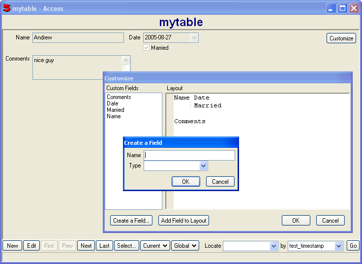

(table, name = false)
Allow end users to add fields to a table and design a layout for the fields.
name defaults to table
User defined layouts are saved in a table called customizable under the specified name.
For example, if we create a table with a timestamp key field:
Database("create mytable (test_timestamp) key(test_timestamp)")
Then we can use Customizable with it like this:
Window(#(Access mytable (Customizable mytable)))
The layout is a simple form of wysiwyg that is converted to a FormControl layout. Valid field names are recognized and converted to prompts and controls, anything else becomes static text. Fields that start in the same column will be placed in the same Form group.
The standard field types are:
Field types are defined with plugins so it is easy to add additional ones. The standard ones are defined in Plugin_FieldTypes.
A typical use of Customizable is to add a "Custom" tab on an Access that contains a CustomizableControl. This allows users to add their own fields to your application's tables. They can then use these custom fields in Select or Reporter.
Note: CustomizableControl should be regarded as "beta". It is usable, but it needs more error checking/handling and lacks any way to rename or delete fields.